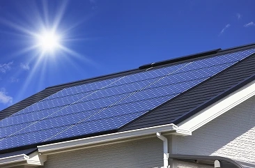

大きな家と小さな家②
こんにちは。富山で自然素材にこだわるホンモノの家、フジ創アイノスです。 ✔ランニングコストにも着目すること！ 家をコンパクトに出来れば、イニシャルコストだけじゃなく、ランニングコストも抑えることが出来ます。 例えば、同じ
続きを読む →FUJISOU AINOS JOURNAL
家づくりのこと、暮らしのこと。
日々の想いを、お伝えします。
新しい記事から 25・40ページ
こんにちは。富山で自然素材にこだわるホンモノの家、フジ創アイノスです。 ✔ランニングコストにも着目すること！ 家をコンパクトに出来れば、イニシャルコストだけじゃなく、ランニングコストも抑えることが出来ます。 例えば、同じ
続きを読む →こんにちは。富山で自然素材にこだわるホンモノの家、フジ創アイノスです。 家づくりをする時は、後悔したくないという気持ちや、夢を叶えたいという強い気持ちから、多くの方が知らず知らずの間に大きな家を建ててしまいます。 しかし
続きを読む →
こんにちは。富山で自然素材にこだわるホンモノの家、フジ創アイノスです。 多くの新婚カップルは、最初は賃貸に住み、いずれ頭金を貯めてからマイホームを購入しようと考えます。 ですが、家賃を払いながら頭金を十分に貯めるのは、な
続きを読む →
こんにちは。富山で自然素材にこだわるホンモノの家、フジ創アイノスです。 前回の記事に書かれている通り、家づくりをする時は、気持ちが大きくなりがちだし、同時に金銭感覚も麻痺しやすくなります。 また、その増えた金額を簡単に住
続きを読む →こんにちは。富山で自然素材にこだわるホンモノの家、フジ創アイノスです。 「住宅は3回建てると満足がいく」と言われますが、これができる人は少ないでしょう。 住宅取得は居住地域、間取り、構造、設備、材料、そして資金計画が重要
続きを読む →
こんにちは。富山で自然素材にこだわるホンモノの家、フジ創アイノスです。 ✔注意点その2：通風と日光 リビングや寝室といった居室は南に配置し、洗面やお風呂といった水回りは北に配置するのが、一般的な設計の考え方となっています
続きを読む →こんにちは。富山で自然素材にこだわるホンモノの家、フジ創アイノスです。 洗濯物を家の中で干すためにランドリールームをつくるのは、今や家づくりのスタンダードとなっています。 その理由のひとつは、共働きが当たり前になっている
続きを読む →
こんにちは。富山で自然素材にこだわるホンモノの家、フジ創アイノスです。 富山県はここ最近、黄砂のためにひどく霞んでいますね。 黄砂は中国西部の砂漠から来ており、その砂漠は自然破壊により、どんどん広がっているそうです。 明
続きを読む →
こんにちは。富山で自然素材にこだわるホンモノの家、フジ創アイノスです。 ✔"iDeCo"を利用することによってさらにカット！ 所得が高い人こそ掛けておいていただきたいのが個人型確定拠出年金の"iDeCo"です。 というの
続きを読む →こんにちは。富山で自然素材にこだわるホンモノの家、フジ創アイノスです。 住宅ローン控除とiDeCo→ https://www.fujisou-ainos.com/staffblog/ideco.shtml 住宅ローン控除
続きを読む →
こんにちは。富山で自然素材にこだわるホンモノの家、フジ創アイノスです。 3月27日（土）・28日（日）に小矢部市綾子で「完成見学会」＆「家づくり見学会」を行います。 "無垢材" をふんだんに使った「自然素材」の家です。
続きを読む →こんにちは。富山で自然素材にこだわるホンモノの家、フジ創アイノスです。 結婚したら、まずは賃貸に住むのがいいか、すぐに家を建てるのがいいか、悩むところだと思います。 「とりあえずアパートを借りて住んで、マイホームはいずれ
続きを読む →
✔同時に"iDeCo"に加入すれば、さらに税金が還付される！？ 家を建てる時、いつもオススメさせていただいているのが、個人型の確定拠出年金の"iDeCo"なんですが、その理由は、これに加入すれば、さらに税金の還付が受けら
続きを読む →こんにちは。富山で自然素材にこだわるホンモノの家、フジ創アイノスです。 "住宅ローン控除制度"とは、住宅ローンを組みながら家を建てた場合、10年に渡って所得税や住民税が還付される制度ですが、おそらく自分が払っている税金の
続きを読む →
こんにちは。富山で自然素材にこだわるホンモノの家、フジ創アイノスです。 住宅ローンには、変動型と固定型の商品がありますが、このどっちが良くて、どっちがダメだということはありません。 変動にせよ固定にせよ、メリットとデメリ
続きを読む →
こんにちは。富山で自然素材にこだわるホンモノの家、フジ創アイノスです。 ✔ 30 坪以下の家が小さいという思い込み "家は最低30坪はないといけない"という思い込みをお持ちの方が多くいますが、実際は総施工面積が30坪に満
続きを読む →こんにちは。富山で自然素材にこだわるホンモノの家、フジ創アイノスです。 例えば、平屋と2階建てと３階建てでは、どれが外部からかかる力に一番強いでしょうか。 もちろんこの答えは平屋です。 重心が低くなればなるほど、強風や重
続きを読む →
こんにちは。富山で自然素材にこだわるホンモノの家、フジ創アイノスです。 アイノスの家の壁は、漆喰の左官塗り壁です。 漆喰は湿度にあわせて湿気を吸収＆放出し、快適な空気環境をつくる自然の調湿機能があります。 子供が壁に落書
続きを読む →
こんにちは。富山で自然素材にこだわるホンモノの家、フジ創アイノスです。 アイノスの家は、こだわりの無垢フローリングです。 柔らかい肌触りで、耐久性・保温性に優れていて、室内に自然な調湿効果が得られます。 使い込むほどに飴
続きを読む →
こんにちは。富山で自然素材にこだわるホンモノの家、フジ創アイノスです。 前回お伝えした、キッチンカウンターと同じような現象が起こる場所が『和室』です。 せっかくつくったのに、実際はほとんど使わない無駄な部屋になるか、キッ
続きを読む →
こんにちは。富山で自然素材にこだわるホンモノの家、フジ創アイノスです。 一般的な家はもちろん、ここ最近建てられた賃貸アパートやマンションなども、キッチンは対面式になっており、ダイニング側にはキッチンカウンターが設置されて
続きを読む →
こんにちは。富山で自然素材にこだわるホンモノの家、フジ創アイノスです。 今日は３月１１日いのちの日です。 東日本大震災が起きて10年が経ちました。 多くの命が失われた悲劇を忘れないため、そして命の大切さを考える日として作
続きを読む →
こんにちは。富山で自然素材にこだわるホンモノの家、フジ創アイノスです。 解決策その1：リビングの位置を南にこだわらない 周囲が家に囲まれている敷地の場合、光を採り込むためには、隣に建っているお家との間に充分な距離を確保し
続きを読む →こんにちは。富山で自然素材にこだわるホンモノの家、フジ創アイノスです。 "リビングダイニングキッチンの窓は南につくりたい"、家づくりをする誰もが希望することでしょう。 そして多くの方が、リビングダイニングキッチンの南には
続きを読む →